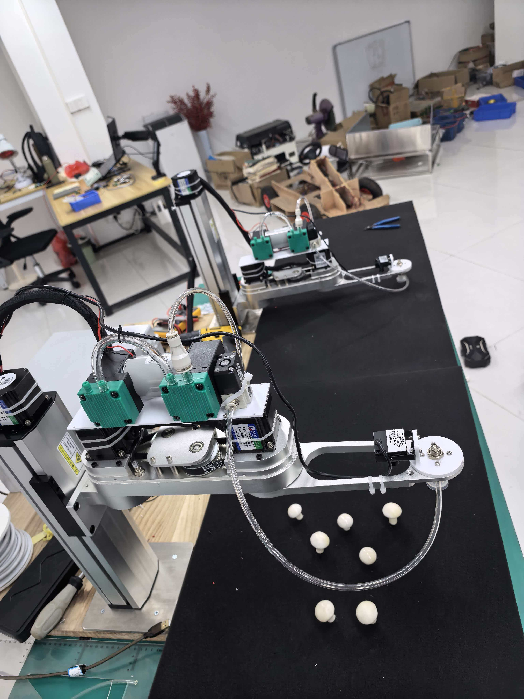

蘑菇采摘机器人（260415）
采摘执行机构与电控联调类项目；适用于农业采摘场景的机电一体化交付展示摘要。

项目概述
围绕采摘动作规划、末端执行与上位协调开展的集成调试；公开页仅保留概述，工艺与客户数据不在此展示。
交付范围（示例）
- 机构与电控接口说明（对外版）
- 调试步骤与安全注意事项摘要
- 验收协助与培训条目（以合同为准）
说明
分类标签若在首页调整为「移动平台」等，请同步修改本页标题旁的类别与首页卡片上的 data-category。
采摘执行机构与电控联调类项目；适用于农业采摘场景的机电一体化交付展示摘要。

围绕采摘动作规划、末端执行与上位协调开展的集成调试；公开页仅保留概述，工艺与客户数据不在此展示。
分类标签若在首页调整为「移动平台」等，请同步修改本页标题旁的类别与首页卡片上的 data-category。